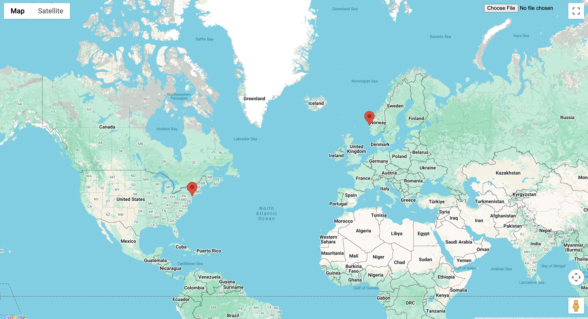

Image Location App
A personal full stack application that uses EXIF metadata from uploaded images and the Google Maps API to display markers at the locations where pictures were taken. Users can visualize all the places they have been to look back on or perhaps return to.

Part One: Basic Functionality
I imported the Google Maps API and built an image upload button. Images are sent to the backend where EXIF metadata is extracted, and GPS coordinates are returned to the frontend to display markers. The image shows markers for a photo from New York City's Korea Town and one from a vacation in Norway.

Part Two: Enhanced Features
With basic functionality complete, I added a clear button to remove all displayed markers. I also added an info window that appears when a marker is clicked, showing the date the picture was taken.